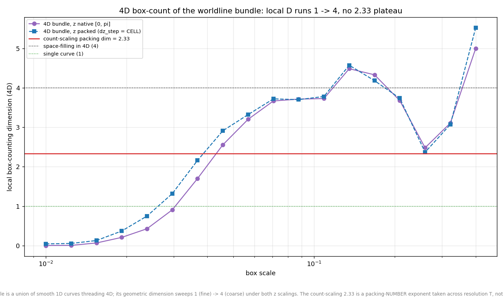

Spacetime box-counts revisited with phases: still no plateau, still dust-fine
Revisit of the 07-02 spacetime box-count pair on the phase-schema
dumps (the 4D analysis learned --phase/--suffix
for this; the phased trajectory is
X(z) = a·[sin(b·z + f) − sin f]/sin(z) + a2 on
the symmetric z grid). The question: does giving every axis a free
phase — which adds ~7% to the jam count and reshapes turnaround
kinematics — give the bundle a geometric dimension at the count
exponent? It does not; both charts reproduce the no-phase shapes point
for point.
- Pooled 3D cloud: local D runs 1.31 (fine) → 2.76 (mid) → 2.89 (coarse) vs 1.3 → 2.9 without phases, crossing the 2.33 count exponent only in passing — no plateau.
- Full 4D bundle (native and cell-packed z): the sweep runs ~0 → ~3.7 with the same overshoot-and-dip at coarse scales; no 2.33 plateau under either scaling.
- The dust-fine feature survives: finest-scale 4D local D = 0.00 (native) / 0.04 (packed). Phases shift where a worldline sits in its cell but not the fact that consecutive-timestep positions land in distinct cells.
- Cell-scale occupancy: 0.75% of 4D cells — same figure as the no-phase run (both measured on equal-size 60k-worldline subsample dumps, so this compares geometry, not jam count).


Takeaway: the phase degrees of freedom leave the geometric story exactly where the no-phase torus and the hard-wall model left it. The count-scaling exponent (2.33 here, unchanged by phases per the 07-05 ladder) is a packing-number exponent taken across resolution T, not the box-counting dimension of any static bundle — the third model variant in a row where the bundle sweeps 1 → 3 (3D) and → 4 (4D) with no plateau. This closes out the phase-schema re-checks: scaling, uniformity, parity, and now spacetime geometry are all phase-blind; only the prefactor and the turnaround kinematics move.